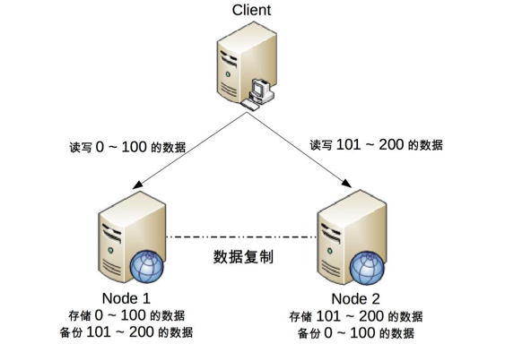

22-CAP理论细节
CAP的关键细节
CAP关注的粒度是数据，而不是整个系统 CAP理论的定义和解释上，用的都是system、node这类的系统级概念，容易给我们造成误解，认为系统只能选择AP或者CP。但是在实际设计中，系统不可能只处理一种数据，有的数据需要使用AP，有的数据需要使用CP。
所以在CAP理论落地实践时，我们需要将系统内部的数据按照不同的应用场景和要求进行分类，每类数据选择不同的策略，而不是直接限定整个系统所有的数据都是同一策略。
CAP理论是忽略网络延迟的。 布鲁尔在定义一致性时，没有考虑网络延迟，也就是说，当事物提交时，数据可以瞬间复制到所有的节点。但实际上，从一个节点的数据复制到另外一个节点总是要花费一定的时间的，无论是几毫秒，还是几秒。这也就意味是，CAP理论中的C是不可能完美实现的，在数据复制的过程中，节点的数据是不一致的。
对于某些严苟的业务场景，如金钱相关、库存相关的场景，不要小看这几十毫秒的数据延迟，在技术上是无法做的完美的数据一致性的，但是业务上又要求要做到数据一致性。因此在单个用户帐户金额、单个商品的存在，理论上要求做到CP，而实际上CP做不到，只能选择做到CA。也就是说只能单点写入，其它节点做备份，无法做到分布式情况下的多点写入。
但是要注意，并不是说这类系统无法做到分布式系统，而是说对于单个用户、单个商品无法做到分布式，但是对于系统整体还是可以应用分布式系统的。下图是其中一种架构：

这种设计存在的明显问题是，一个节点出现故障后，这个节点上的用户就无法进行读写操作了，但对于整个网站来说，可以降低节点故障时受影响的用户的数据和范围。
正常情况下，不存在CP和AP的选择，可以同是满足CA。 CAP理论告诉我们分布式系统下只能选择CP或者AP，但是这里的前提是已经发生了网络分区。如果系统没有发生分区现象，也就是P不存在的时候，我们没有必要放弃C或者A，应该C和A都可以保障。这要求架构设计时，即要考虑分区时选择CP或者AP,也要考虑分区没有发生时如何保证CA。
放弃不等于什么都不做，需要为分区恢复后做准备。
CAP理论告诉我们三者只可以选择二个，在分区期间我们放弃了C或者A，并不意味者永远放弃了C或者A。我们可以在分区期间做一些操作，从而在分区故障解决后，系统能够重新达到CA的状态。
典型做法就是在分区期间记录一些日志，当分区故障解决后，系统根据日志进行数据恢复，使得重新达到CA的状态。
ACID
ACID是数据库管理中为了保证事务正确性而提出的一个理论。
- Atomicity(原子性) 一个事务的所有操作，要么全部完成，要么全部不完成，不存在中间状态。
- Consistency(一致性) 在事物开始之间和事务结束之后，数据库的完整性没有被破坏。
- Isolation(隔离性) 数据库允许多个并发事务同时对数据进行读和写操作。 -Durability(持久性) 事物处理后，对数据的修改是永久的，即使系统故障也不会丢失。
BASE
BASE是指基本可用(Basically Available)、软状态(Soft State)、最终一致性(Eventual Consistency)，核心思想是即便无法做到强一致性，但应该可以采用一定的方法做到最终一致性。
基本可用
分布式系统出现故障时，允许损失部分不可用，即保证核心业务可用。
具体选择哪些业务作为可以损失的业务，哪些是必须保证的业务，需要根据具体业务确定。
软状态
允许系统出现中间状态,而该中间状态不会影响系统整体的可用性。这里的中间状态是指CAP理论中的数据不一致。
最终一致性
系统中的所有数据副本经过一段时间后，最终所有的数据能够达到一致的状态。
一定时间和数据特征是强关联的，不同数据能够容忍数据不一致的时间是不一同的。
BASE理论其实是CAP理论的一个补充，具体来说是BASE理论是对AP的一个补充。
CAP理论是忽略延时的，而实际中延时是不可避免的。
这意味着完美的CP是不存在的，即使是几毫秒的延迟，在这几毫秒内，系统也是不符合CP的。因为CAP方案中的CP方案，实际上也中只是实现了最终一致性，只是这个"一定时间"是几毫秒而已。
AP方案牺牲一致性只是指在分区期间，而不是永远放弃一致性。
这一点是BASE理论的延伸,分区期间牺牲了一致性，在分区故障结束后，系统应该达到最终一致性。
总结
ACID是数据库事务完整性理论、CAP是分布式系统设计理论、BASE理论是CAP理论中AP方案的延伸。